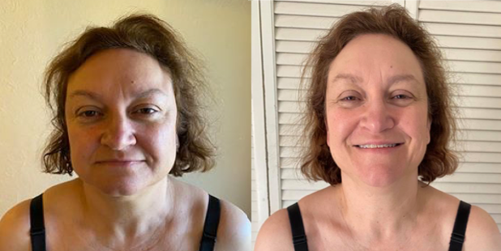
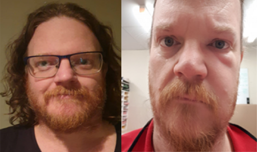

"I had tried every other program out there and although some systems had worked, none had been able to offer me a long term solution to maintain a healthy, happy body. I’m now 21kgs down and yes I’m ecstatic about that number but I’m even more excited to have more energy than I did in my 20s. I’m finally able to fit into clothes at the back of my cupboard. Also, shout out to Lean Jones for all the early morning weigh-ins and additional advice along the way. It’s an unexpected bonus to have that additional support and accountability – a community that helps you succeed each and every day."
"This #newyou program is the easiest weight loss I’ve ever experienced. In the beginning, I wasn’t focused on my measurements as I didn’t feel deprived over the 30 days (apart from the double cleanses and even they were a piece of cake once I knew what to expect) and before I knew it I was 6.9 kgs lighter. My clothes were looser and I noticed I was shrinking. I absolutely love it and didn’t even have to think twice about continuing. Thanks so much Sharon."
"10 months ago, I started the 28 Day Challenge and in that time lost just under 10kgs. I couldn't believe it when I jumped on the scales..(I had to do 3 times!). During the program, I feling full with shakes, snacks and regular food and whats great is that no counting calories or portion control required! The more I felt full, it seemed the faster the weight came off..completely different from anything I've tried before. I continued this pattern under the guidance of my SUPER coach Sharon Cheevers & today I'm super F@#*%! PUMPED to say that I have lost 50kgs."
"I knew I needed a proper detox so I decided that this was an ideal way to try and reset my body. To my utter surprise, within the first week, I was sleeping better and had more energy throughout the day! By the end of the first 28 days, some of my regular autoimmune disease symptoms had started to disappear. The absolute added bonus for me was that I also lost 5kg and multiple cms from my body! I saw many of Sharon's clients give this a go for weight loss - well it works even if that's not your aim! Whatever the reason - Sharon, you're an amazing motivator. I never felt alone - thank you!"
"Well, didn‚Äôt I get a shock when the smoothies are actually nice! I truly enjoy them and cant believe I‚Äôm writing that, my kids even crowd around to take them off me! They‚Äôre really filling, and it‚Äôs the first time in a long time I haven‚Äôt felt hungry. The cleanse days if I‚Äôm honest are hard, however with mind over matter I did achieve them and definitely gets easier üëè."
"Before starting the NewYouProgram28 I was trying everything and anything to get my health, fitness and weight on track. When my dad introduced me to this challenge, I was quite excited, especially after hearing how great he felt throughout his 28 days. I can honestly say I am feeling 1000x better since starting and my energy and mindset has been revamped. I find myself having more energy getting up for the day and that sluggish, bloated feeling has completely disappeared. Thanks Sharon for you support and encouragement each and everday x."
"The support of Sharon as my coach and their fantastic group kept me going! After 28 days I had more energy and didn’t have to rely on coffee throughout the day, like I normally do. I am now 8.5kgs lighter and 29 cms smaller around my whole body. Best of all, I feel healthier and and I am now mindful of my food and have new habits. Thanks Sharon for providing a great program and sharing my happiness when I succeed."
"This morning my girls were complimenting me that I am starting to build a bit of core in my stomach area, so just goes to show even without exercise I'm seeing results thanks to this program. Love love üíï the cleanse days which I am still surprised about. Thanks to Fabian for telling me about the program and for all your encouragement along the way. I love the new me and so does my family!"
"Somehow, this amazing product and health regime lifted my mood! And, above all, helped me lose 6.3kgs. I felt it in the first week when the dreaded tight jeans feeling was no longer there. I now have a new found focus, disciple and appreciation for the program. Thanks Sharon for your unwavering support. It was a no brainer for me to continue, now onto month 2 with more loss to come!"
"Just 28 short days ago, I went from eating only 1 meal a day and jumped right onto and followed the newyou 28 day program and lost just shy of 10kgs in my first month. I had my good days but as a bakery manager I sure had some hard days in there as well, as no road is smooth every step of the way. On those hard days, it was great to be able to tap into the support of coach.I could feel the weight start to shed off me even though I was still able to enjoy loads of food!"
